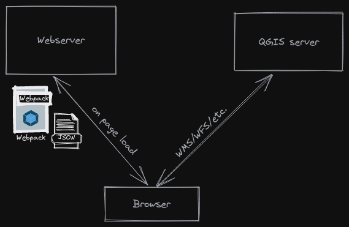
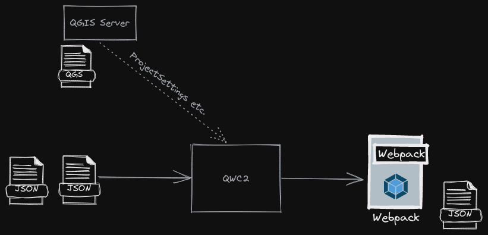

Created: 2022-11-23 Wed 11:32
Les objectifs de ce workshop sont :
QWC2 est un client web pour le serveur QGIS.


Environnement de développement minimal
Serveur cloud en ligne ou machine locale avec ligne de commande Linux et docker
Swiss Cloud provider, avec servers en CH, DE, AT, BG.
sudo bash
apt update
apt install nodejs npm unzip
npm install -g yarn
git clone --recursive https://github.com/qgis/qwc2-demo-app.git
cd qwc2-demo-app
yarn install
yarn start
Nous allons à l'adresse <IP ADDRESS>:8081
Conseil : désactivez le cache du navigateur
yarn run prod
ls ./prod
Maintenant nous préparons un conteneur pour construire l'application donc nous n'avons pas besoin de dépendances locales comme node etc. et il est reproductible, nous utilisons docker-compose, de sorte que nous pouvons ensuite ajouter les autres composants, un peu à la fois.
apt install docker.io
apt install docker-compose
Nous créons docker-compose.yml dans le répertoire /home/ubuntu/
version: '3'
services:
qwc2:
image: node:18.10
volumes:
- ./qwc2-demo-app:/io/app
command: >
bash -c "cd /io/app &&
yarn install &&
yarn start"
ports:
- 8081:8081
Changeons-le maintenant car nous voulons seulement l'utiliser comme un
constructeur et ajouter un serveur web. Nous changeons donc la
dernière ligne de la 'commande' en yarn run prod et nous fermons les
ports…
Nous avons maintenant un processus qui génère l'application dont nous avons besoin. Nous allons mettre un serveur web maintenant. Caddy.
https://caddyserver.com/ https://hub.docker.com/_/caddy
Nous modifions le docker-compose.yml en ajoutant le service caddy :
caddy:
image: caddy:2.6.2-alpine
volumes:
- ./qwc2-demo-app/prod:/usr/share/caddy
ports:
- 80:80
Maintenant, nous voulons ajouter notre propre projet qgis et ne pas simplement utiliser des wms directs via un serveur géographique externe. Ajoutons donc un serveur QGIS pour publier nos projets.
Nous téléchargeons l'un des projets d'exemple de QField https://docs.qfield.org/get-started/sample-projects/.
mkdir qgis
curl -L -O https://docs.qfield.org/assets/projects/simple-bee-farming.zip
unzip simple-bee-farming.zip -d simple_bee_farming
Nous modifions le docker-compose.yml en ajoutant le service qgis-server :
qgis-server:
image: opengisch/qgis-server:3.28.0-jammy
volumes:
- ./qgis:/io/data
expose:
- 9993
ports:
- 8080:80
Nous pouvons essayer les requêtes du navigateur directement http://<IP ADDRESS>:8080/ogc/simplebeefarming?SERVICE=WMS&REQUEST=GetProjectSettings
Mais certaines choses comme getFeatureInfo ne fonctionnent pas parce qu'elles sont sur des URL différentes, nous devons nous assurer que tout passe par le même endroit, c'est-à-dire caddy, ce qui a aussi l'avantage, si nous utilisons HTTPS, de configurer les certificats en un seul endroit.
Caddyfile
194.182.160.95:80 {
# Set this path to your site's directory.
root * /usr/share/caddy
# Enable the static file server.
file_server
log {
level DEBUG
output stdout
}
@ows {
path_regexp map_file ^/ows/(.*)
}
# https://localhost/ows/bees?SERVICE=WMS&REQUEST=GetCapabilities
# directly call QGIS via fcgi
reverse_proxy @ows qgis-server:9993 {
transport fastcgi {
env QUERY_STRING {query}&map=/io/data/{http.regexp.map_file.1}/{http.regexp.map_file.1}.qgs
}
}
}
docker-compose.yml
caddy:
image: caddy:2.6.2-alpine
volumes:
- ./qwc2-demo-app/prod:/usr/share/caddy
- ./Caddyfile:/etc/caddy/Caddyfile
ports:
- 80:80
Nous pouvons supprimer les ports de qgis-server et désactiver nginx interne et utiliser seulement FastCGI.
FastCGI est une technique permettant la communication entre un serveur HTTP et un logiciel indépendant, c'est une évolution de Common Gateway Interface, abrégée en CGI, signifiant en anglais « Interface passerelle commune ».
expose:
- 9993
environment:
SKIP_NGINX: "true"
…
Pascal: 194.182.163.132 ssh ubuntu@194.182.163.132 iD3hbgsjndkmcat
Fred: 194.182.162.239 ssh ubuntu@194.182.162.239 sR3efhfiefqhaet